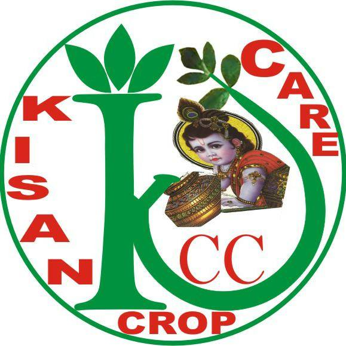

Mr. Pravin Shah 
| Chairman & Managing Director |
Mr. Pravin Shah has a degree in Bachelor of Science Program in
Biology and has been at the helm of the company.
He has long and rich experience of 30+ years with KISAN CROP CARE
and has been at the helm of various functions during his long career.
He oversees the leadership team of KISAN CROP CARE, has been passionately driving continuous organizational
growth and improvement with her dynamic leadership, sound strategic insights and outstanding people
management skills.
Blessed with the ability to look into the minutest details, Mr. Pravin Shah has set challenging
cross-functional aspirations for the company. He is instrumental in making strategic decisions
for the company, leads many of the functions including International Business and has been responsible
in the execution of several projects of the group.
He is the leader of the management team as well of executor, inachieving overall
performance of the company to maintain its competitive position in the market both in terms of revenues
and profits.
SOME WORDS FROM MR. PRAVIN SHAH :
Our department continuously develops and generates data with different
GLP approved laboratories domestically and internationally for our various
specialized formulations.
We are committed to maintain industry standards and best practices for a
pollution-free production activity and make certain that our products are
environmentally safe and secure.
By the help of our sophisticated infrastructural facility, we are instrumental formulating products in an effective manner. Our unit is well-armed with latest machinery & equipment, our processing facility is able of making high quality products. The installed machines are also upgraded on regular basis and are controlled by our team of personnel. To ensure particular & uninterrupted execution of our operations, we have segregated our facility into various sections such as production facility, quality testing unit, packaging department, etc. By the support of our sincere & honest team, we have attained a reputed position in this area. With their excellent performance, we are capable to increase the level of quality in products.
WHO WE ARE
KCC – An abbreviation for ‘ KISAN CROP CARE ’, is a Indian Entity that was founded by our beloved Mr. Pravin Shah which has its roots in the agrochemicals industry. We are one of the pioneer companies in India having extensive experience and expertise spanning over 3 decades in the field of agrochemical manufacturing, formulations and marketing.